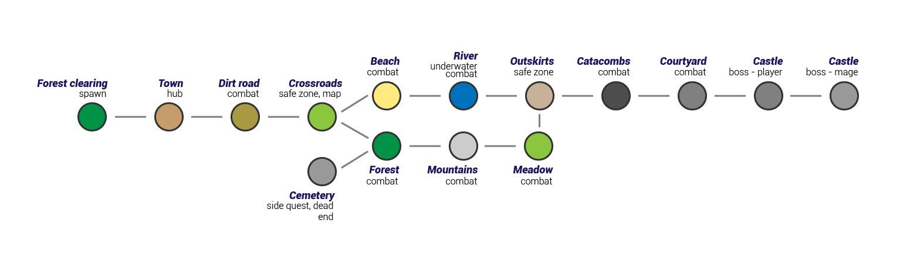
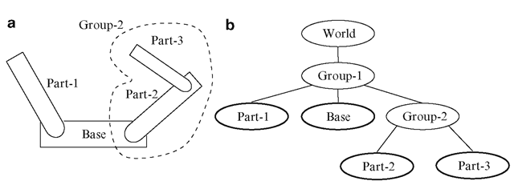
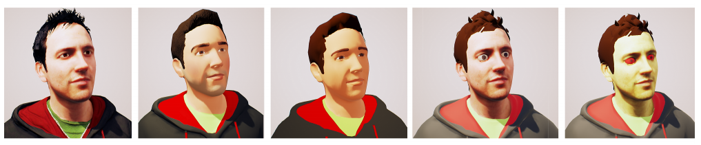
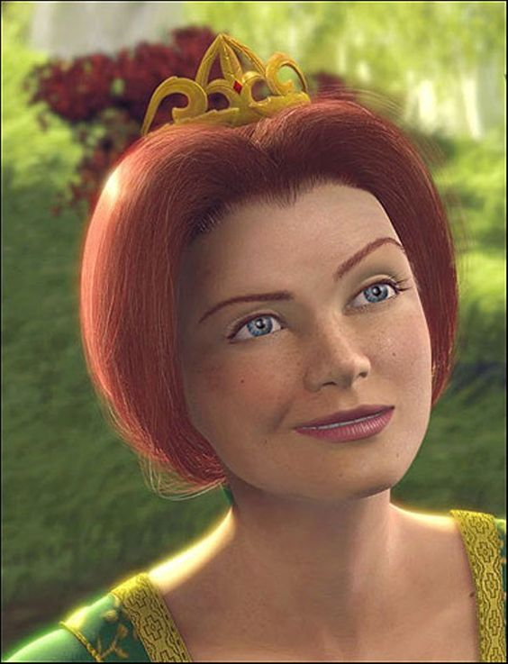
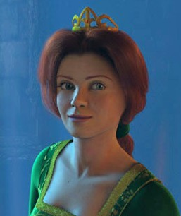
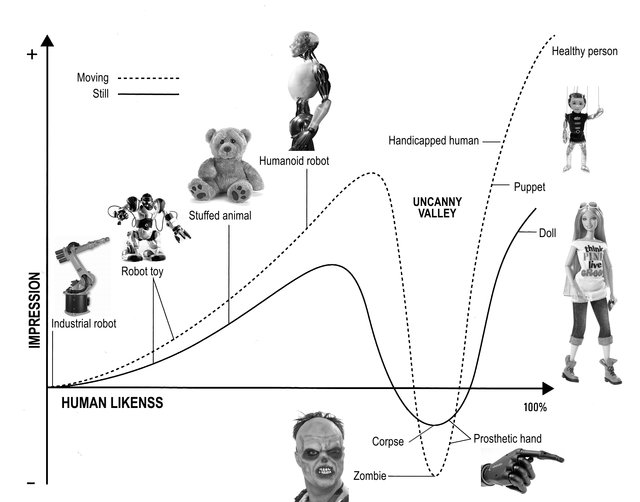
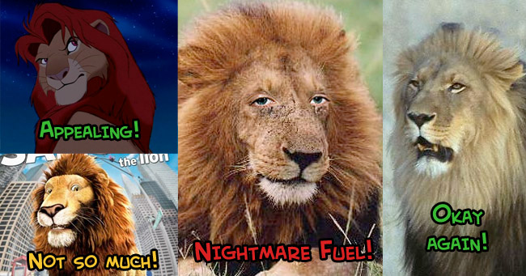
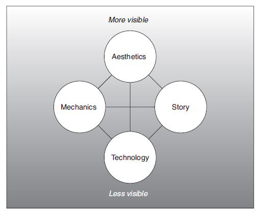

Přednáška 1 · SOL varianta
Co si z přednášky odnést
Po přednášce dokážete:
- vysvětlit rozdíl mezi virtuálním světem, scénou a herní úrovní,
- rozlišit graf scén a graf scény,
- zvolit vhodnou reprezentaci a míru personalizace avatara,
- použít Schellovu tetrádu při rozboru i návrhu hry,
- převést záměr hry do první kontrolovatelné verze světa.
Mapa dnešní přednášky
Virtuální svět
→Scény a jejich graf
→Avatar a přítomnost
→Návrh hry
Virtuální svět
- Prostor: kde se něco může stát.
- Stav: co právě platí.
- Pravidla: jak se stav mění.
- Prezentace: jak se svět projeví hráči.
Svět, scéna a úroveň
Proč svět dělit na scény
- načítání a uvolňování obsahu,
- řízení výkonu a paměti,
- oddělení herních režimů,
- přehlednější tvorba a testování,
- rozdělení práce v týmu,
- bezpečné opakované použití částí.
Jedna mapa, více možných dělení

- podle místností či oblastí,
- podle příběhových situací,
- podle potřeb streamování,
- podle odpovědnosti systémů.
Graf scén

Graf odpovídá hlavně na otázku kam a za jakých podmínek lze pokračovat.
Graf scény
Hierarchie objektů uvnitř jedné scény.
- transformace a rodičovství,
- životní cyklus objektů,
- lokální odpovědnosti,
- opakovaně použitelné podstromy.
Dva různé grafy
| Graf scén | Graf scény | |
|---|---|---|
| Uzly | celé scény či stavy | objekty v jedné scéně |
| Hrany | přechod a návaznost | hierarchie a vazby |
| Otázka | kam lze pokračovat? | z čeho se scéna skládá? |
| Riziko | slepé větve, drahé přechody | nepřehledná hierarchie |
Hranice scény v praxi
Samotné dveře ještě nemusí znamenat novou scénu.
Kontrolní otázky ke scénám
- Co musí zůstat zachováno při přechodu?
- Co lze bezpečně zahodit a znovu vytvořit?
- Kde hráč očekává kontinuitu?
- Které části se mají testovat samostatně?
- Jak dlouho může přechod trvat?
Avatar jako rozhraní se světem
- může být tělesný, abstraktní i neviditelný,
- může být ovládán přímo nebo nepřímo,
- propojuje kameru, ovládání, zpětnou vazbu a pravidla.
Perspektiva a informace
Tělesný a abstraktní avatar

Kurzor, vozidlo, skupina
nebo samotná kamera
Přímé a nepřímé ovládání
Soulad avatara se světem


- geometrie, materiál a animace tvoří jeden styl,
- vyšší detail avatara zvyšuje očekávání vůči okolí,
- nesoulad může být záměr, ale musí být čitelný.
Personalizace avatara
Co může získat hráč
- identifikaci a vlastnictví,
- srozumitelnou roli,
- sociální odlišení.
Co platí tým
- více kombinací k otestování,
- omezení animací a výbavy,
- riziko narušení výtvarného stylu.
Přítomnost a identifikace
- Prostorová přítomnost: pocit „jsem tam“.
- Jednající přítomnost: pocit „mé akce mají účinek“.
- Sociální přítomnost: pocit „nejsem tam sám“.
- Identifikace: vztah „jsem tato postava“ nebo „jednám za ni“.
Údolí nepatřičnosti

Rostoucí realističnost může zvýšit citlivost na chyby v:
- pohledu a mimice,
- načasování pohybu,
- materiálu kůže a vlasů,
- souladu hlasu a těla.
Stylizace jako konzistentní slib

Stylizace může:
- sjednotit dostupné prostředky,
- zvýraznit důležité rysy,
- snížit očekávání fyzické přesnosti.
Kontrolní otázky k avatarovi
- Co hráč prostřednictvím avatara vnímá?
- Které akce musí působit bezprostředně?
- Jak avatar sděluje stav a záměr?
- Potřebuje hráč tělo vidět?
- Které prvky personalizace mění význam hry?
Návrh hry jako rozhodování
Návrhář rozhoduje zejména o:
- cílech a pravidlech,
- informacích a zpětné vazbě,
- tempu, nejistotě a obtížnosti,
- podobě světa a způsobu jeho realizace.
Od záměru k ověřitelné situaci
Zamýšlený zážitek
↓Rozhodnutí hráče
↓Reakce systému
↓Vnímatelný důsledek
Schellova tetráda

- Mechaniky
- Příběh
- Estetika
- Technologie
Zdroj: Jesse Schell: The Art of Game Design
Mechaniky
- akce a omezení,
- cíle a podmínky úspěchu,
- zdroje a ekonomika,
- náhoda, informace a dovednost,
- pravidla pro změnu stavu světa.
Příběh
- předem připravené události,
- příběh vznikající z pravidel,
- role postav a motivace,
- pořadí, rytmus a interpretace událostí.
Estetika
- obraz, zvuk, pohyb a rytmus,
- čitelnost důležitých objektů,
- konzistence stylu,
- smyslová a emoční kvalita interakce.
Technologie
- cílová zařízení a vstupy,
- herní engine, nástroje a datový tok,
- síť, výkon a perzistence,
- dostupné schopnosti a čas týmu.
Příklad: tichý průchod hlídaným domem
| Mechaniky | skrývání, hluk, omezený rozhled stráží |
| Příběh | hráč nechce obyvatele ohrozit |
| Estetika | tlumené světlo, vzdálené kroky, úzké prostory |
| Technologie | navigační síť, detekce zvuku, dynamické osvětlení |
Konzistence tetrády
- Mechanika vytváří rozhodnutí, které příběh dokáže interpretovat.
- Estetika zvýrazňuje stav potřebný pro rozhodnutí.
- Technologie udrží odezvu a rozsah, které mechanika vyžaduje.
- Příběh neslibuje schopnosti, které systém nepodporuje.
Krátké týmové cvičení
Za 8 minut vyberte jednu herní situaci ze svého projektu.
- Jednou větou popište zamýšlený zážitek.
- Doplňte čtyři vrcholy tetrády.
- Označte nejslabší vazbu mezi dvěma vrcholy.
- Navrhněte jeden levný test této vazby.
Kontrolní seznam pro projekt
- Máme graf scén a známe důvod každé hranice.
- Umíme popsat, co se zachovává mezi scénami.
- Avatar poskytuje informace potřebné pro rozhodování.
- Perspektiva a ovládání podporují zamýšlený vztah ke světu.
- Čtyři vrcholy tetrády tvoří jeden ověřitelný celek.
- Víme, kterou vazbu otestujeme jako první.
Most k multimodální zpětné vazbě
V další přednášce se zaměříme na to, jak svět hráči sděluje svůj stav.
- Která informace je kritická?
- Jak ji vyjádřit obrazem, zvukem a haptikou?
- Co se stane, když jeden kanál hráč nevnímá?
Zdroje a další studium
- Jesse Schell: The Art of Game Design: A Book of Lenses.
- Katie Salen, Eric Zimmerman: Rules of Play.
- Tracy Fullerton: Game Design Workshop.
- Aktuální informace k předmětu: courses.fit.cvut.cz/BI-VHS/
- Studijní repozitář: gitlab.fit.cvut.cz/BI-VHS/bi-vhs
Otázky?
Scény · avatar · tetráda